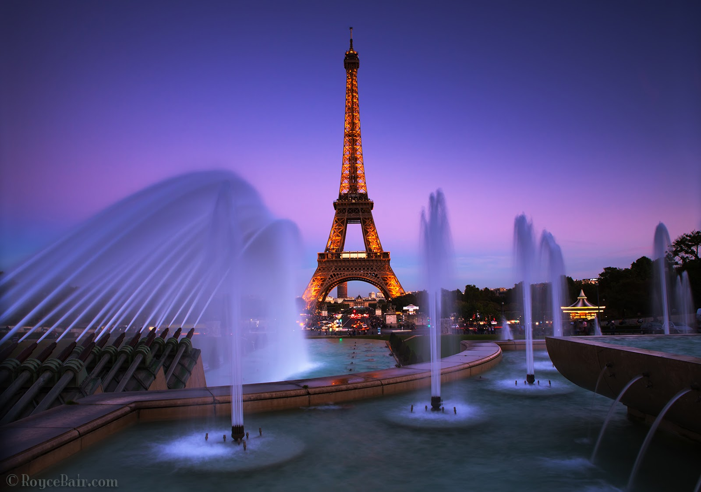

Fun Facts and Trivia
- The Eiffel Tower expands and contracts! In hot weather, it can grow by up to 15 cm (6 inches).
- It was the tallest structure in the world until the Chrysler Building in New York surpassed it in 1930.
- The tower has been featured in over 200 films, including "Midnight in Paris" and "Mission: Impossible."
- Gustave Eiffel had a secret apartment on the third level, used for scientific experiments.
- During World War II, the French cut the tower’s elevator cables to prevent Nazi use.
: Eiffel Tower at Night
As the sun sets, the Eiffel Tower transforms into a dazzling light show. Every evening, from sunset to 1 AM, 20,000 twinkling lights illuminate the structure for five minutes every hour. This spectacle attracts thousands of spectators and adds to the tower’s romantic appeal. However, professional photography of the tower at night requires permission due to copyright laws on the light display.
Events and Celebrations
The Eiffel Tower has been the backdrop for countless proposals, weddings, and national celebrations. It hosts annual light displays for Bastille Day (July 14) and has been part of significant events like the Millennium celebrations and the Olympic handover in 2024.